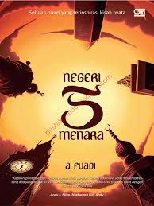
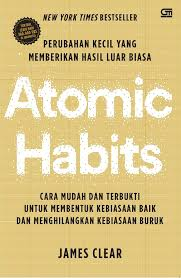

<!DOCTYPE html>
<html lang="id"></html>
<head></head>
<meta charset="UTF-8">
<meta name="viewport" content="width=device-width, initial-scale=1.0">
<title>Profil Usaha Buku</title>
<link rel="stylesheet" href="style.css" />
<head></head>
<body>
<nav>  <a  href="index.html">Beranda</a> 
   <a  href="produk.html">Produk</a>
   <a  href="bedah-buku.html">Bedah Buku</a>
   <a  href="testimoni.html">Testimoni</a>
   <a  href="tampil-testimoni.html">Testimoni Pembeli</a>
</nav> 


<h1>Toko Buku Nabila</h1>
<section class="daftar-produk">
<main class="artikel">
    <h2>Bedah Buku: Negeri 5 Menara</h2>
    <p class="penulis">Ditulis oleh: Ahmad Fuadi</p>
    
    

    <p>
        Buku ini menceritakan perjalanan hidup Alif, seorang anak Minang yang menempuh pendidikan di pondok pesantren Madani.
        Awalnya penuh keraguan, namun perlahan Alif menemukan makna perjuangan, persahabatan, dan kekuatan impian. 
    </p>
   <blockquote>
    "Man Jadda Wajada - Siapa yang bersungguh-sungguh,dia akan berhasil."
   </blockquote> 
   <p>
    Kalimat itu menjadi semangat utama dalam buku ini.
  Kisah yang ditulis berdasarkan pengalaman nyata ini sangat menginspirasi, terutama bagi pelajar yang sedang mengejar mimpi mereka. penulis berhasil menyampaikan pesan-pesan moral melelui narasi yang hidup.   
   </p>

   <p>
        Buku ini cocok dibaca oleh remaja dan orang dewasa yang sedang mencari motivasi hidup. Cerita persahabatan, perjuangan, dan cinta belejer membuatnya menyentuh dan relevan bagi pembaca di berbagai usia. 
   </p>
  <a href="produk.html" class="btn-kembali">← kembali ke Katalog</a> 
</main>
</section>
<footer>
    <p>&copy; 2026 Toko Buku Nabila</p>
</footer>
</body>
</html>
<h1>Toko Buku Nabila</h1>
<section class="daftar-produk">
<main class="artikel">
    <h2>Bedah Buku: Atomic Habits </h2>
    <p class="penulis">Ditulis oleh: James Clear</p>
     

<p>
    Buku Atomic Habits ditulis untuk membantu pembaca memahami bahwa perubahan besar dalam hidup tidak harus dimulai dari hal yang besar.
    Banyak orang gagal berubah karena menetapkan target yang terlalu tinggi. Melalui buku ini, James Clear mengajak pembaca fokus pada kebiasaan kecil yang dilakukan secara konsisten.
</p> 
<blockquote>
    “Small habits make a big difference.”
(Kebiasaan kecil bisa membuat perubahan besar.)

“Every action you take is a vote for the type of person you wish to become.”
(Setiap tindakanmu adalah suara untuk jenis orang yang ingin kamu jadi.)
</blockquote>
<p>
    Buku ini menjelaskan bahwa kebiasaan kecil (atomic habits) memiliki dampak besar jika dilakukan terus-menerus. Penulis menekankan bahwa kesuksesan ditentukan oleh sistem dan proses, bukan hanya tujuan akhir.
James Clear juga memperkenalkan empat hukum pembentukan kebiasaan, yaitu: membuat kebiasaan terlihat jelas, menarik, mudah dilakukan, dan memberikan kepuasan. Dengan cara ini, kebiasaan baik lebih mudah dibentuk dan kebiasaan buruk dapat dihindari.
</p>   
<p>
    Buku ini cocok dibaca oleh pelajar, guru, mahasiswa yang ingin berkembang secara pribadi melalui perubahan kecil tapi konsisten.
</p> 
<a href="produk.html" class="btn-kembali">← kembali ke Katalog</a> 
</main>
</section>
<footer>
    <p>&copy; 2026 Toko Buku Nabila</p>

</footer>
